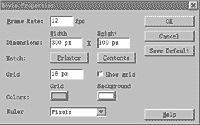
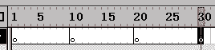
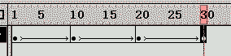
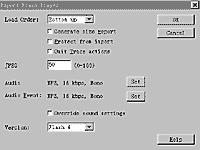

|
|
| 当前位置：电脑报电子版 > 1999 年 > 34 期 > 大众网络 > Flash制作实例——交替变换的“欢迎光临” |
| 《 Flash制作实例——交替变换的“欢迎光临” 》 |
| 自从Macromedia公司推出了flash以后，制作动态网页就变得轻而易举，再不用费力地学Java，只要用flash就能制作出各种各样的动态效果。来吧，Follow
me，我们一起来做一个flash动画。 我们要制作的flash动画是在页面中交替变换的“欢迎光临”四个字。只要你一步一步地跟着做，会感觉到flash一点都不复杂。 一、运行flash，打开一个空白页面。你可以对页面的属性进行设置。点击菜单条上的“Modify→Movie”（可以用快捷键“Ctrl＋M”来激活），然后出现“Movie properties”设置窗口，如图1。 其中Frame Rate是动画每秒播放的帧数，数值越大，动画闪动越快。Dimensions定义flash动画尺寸大小，可以根据需要进行设置，Grid定义工作区的网格大小，Show grid决定是否显示网格，选中后在工作区会出现网格，有助于把图片做得精确。在Colors的设置中，Grid是设定网格线颜色，Background是设置背景色。根据需要设定好后，按“OK”，工作区内会出现一个页面，它的大小就是以后你插入Html页面中的flash动画的大小。 三、用鼠标点击时间轴第1帧的位置，使该帧变成黑色，表示你正在对这一帧进行操作，然后点击工具栏中的文字工具(见图3)，并根据你的需要选择字型、字体、大小、颜色等，然后输入“欢”字。 输完文字后，选择主菜单中的“Modify→Break Apart”，将文字打散，使它成为非群组关系，只有这样，才能做出文字形状的变化。（可以选取用热键“Ctrl＋B”来打散文字） 四、依次选中时间轴10、20、30的位置，输入另外三个文字并打散。 五、输完文字并打散后，可以选择工具栏中的油漆桶，调配你喜欢的渐变颜色，然后移动鼠标到每个文字上，点一下文字，就可以看到文字被涂上了漂亮的渐变颜色。 六、接下来，就可以开始做变化效果了。选中时间轴上的第1帧，按鼠标右键，选择“properties”(属性)选项，然后在弹出的窗口中选择Tweening标签页，在Tweening下拉列表框中选中shape，然后根据个人爱好选择变化方式。其中Blend是指文字变化中的融合方式，Distributive是指分散变化，Angular是指有棱角的变化，Easing是指变化中的渐慢方式，可以拖动滑杆进行设定，如图4。 设定好后，按“OK”，这时，在时间轴第1帧和第10帧之间，会出现一条带箭头的绿线，这表明从第1帧到第10帧flash会自动进行shape的变化。 七、依此类推，对其他几个字也进行设置，然后可以看到每个关键帧之间都会出现带箭头的绿线，如图5，OK，大功告成。 八、按一下回车，可以预览一下效果。满意后就可以输出成品了。 九、全部完成后，按保存按钮，可以把flash动画保存起来，以便于以后修改，如选择菜单中的“File→Export Movie”，你可以把你的作品输出为flash动画。键入文件名，然后会出现一个窗口，如图6。你可以根据你的需要进行设置，其中Load Order是指载入顺序，可以在下拉列表框中选择。Generate Size Report是指输出动画时，是否生成附带的动画大小说明档，Protect From Import是保护你的作品不被他人修改，Omit Trace actions是隐去轨迹输出，JPEG是指你的动画中如果使用到图像，可以统一压缩品质，值越大品质越好。这样，一个后缀名为SWF的flash动画就制作好了，你可以用Dreamweaver将它嵌入你的页面。 怎么样？是不是很简单？你学会了吗？ (歌 手) |
| 下载本期推荐软件 | 页 首 |
| 《电脑报》版权所有，电脑报网站编辑部设计制作发布 |